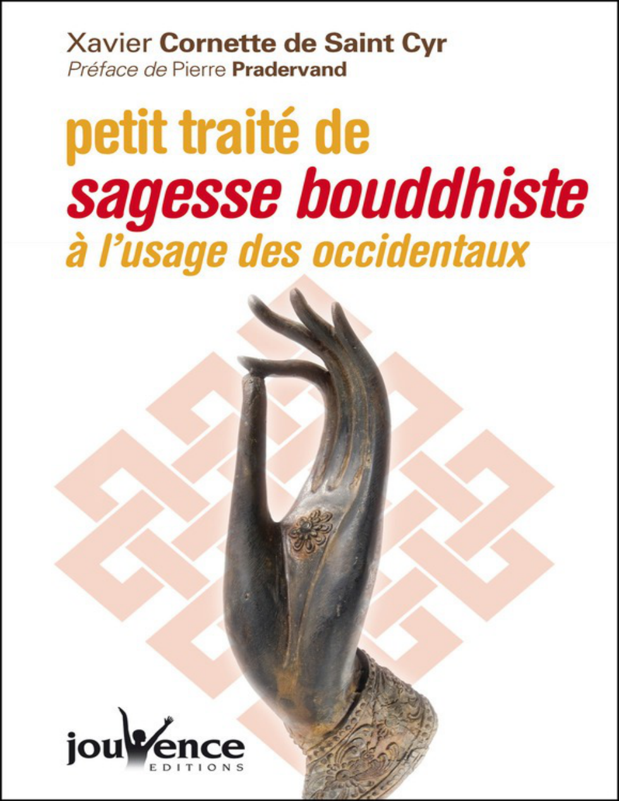

Petit traité de sagesse bouddhiste à l’usage des Occidentaux
Xavier Cornette de Saint Cyr
Spiritualités et religions · Spiritualités
195 pages PDF
Résumé général
Introduction à des enseignements bouddhistes et à leur interprétation pour un lectorat occidental, depuis les origines de la tradition jusqu’aux principes de sagesse pratique.
Chapitres et pages
Dédicace — PDF p. 9
Résumé non encore vérifié à partir du texte intégral.
Préface de Pierre Pradervand — PDF p. 12
Résumé non encore vérifié à partir du texte intégral.
Introduction — PDF p. 16
Résumé non encore vérifié à partir du texte intégral.
Première partie : Un Sermon qui fait date — PDF p. 24
Résumé non encore vérifié à partir du texte intégral.
Deuxième partie : Une éthique de l’action — PDF p. 83
Résumé non encore vérifié à partir du texte intégral.
Troisième partie : La relation à l’Autre — PDF p. 139
Résumé non encore vérifié à partir du texte intégral.
Glossaire — PDF p. 181
Résumé non encore vérifié à partir du texte intégral.
Bibliographie — PDF p. 190
Résumé non encore vérifié à partir du texte intégral.
Invitation aux lecteurs — PDF p. 194
Résumé non encore vérifié à partir du texte intégral.
Critiques externes
Lecteur PDF privé
Le lecteur intégré utilise la prise en charge PDF de ton navigateur. Si l’affichage intégré est bloqué sur ton téléphone, utilise le lien « Ouvrir le PDF ».